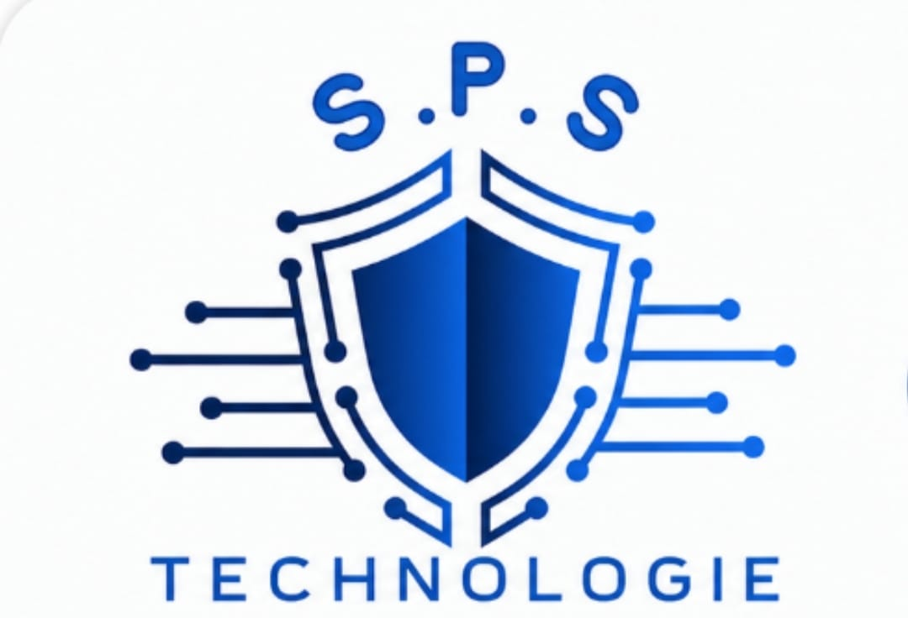

Vidéosurveillance & contrôle d’accès
Caméras, enregistrement, contrôle des entrées et supervision pour surveiller vos sites en toute sérénité.

SPS Technologie installe et accompagne des solutions de sécurité, de réseau et de communication pensées pour votre tranquillité.
Demander une étude ↗01 / NOS SOLUTIONS
Caméras, enregistrement, contrôle des entrées et supervision pour surveiller vos sites en toute sérénité.
Protection intrusion et alertes configurées selon la réalité de vos locaux, de vos biens et de vos équipes.
Installation, câblage et maintenance de réseaux performants, sécurisés et prêts à évoluer.
Interphonie, téléphonie et communication unifiée pour des échanges plus simples et plus fluides.
02 / UNE EXPERTISE DE TERRAIN
De l’audit à la mise en service, SPS Technologie vous accompagne avec une approche claire, des équipements adaptés et un suivi attentif.
03 / CONTACT
Gafsa Ville, Tunisie
Contactez SPS Technologie pour une étude personnalisée de vos besoins.